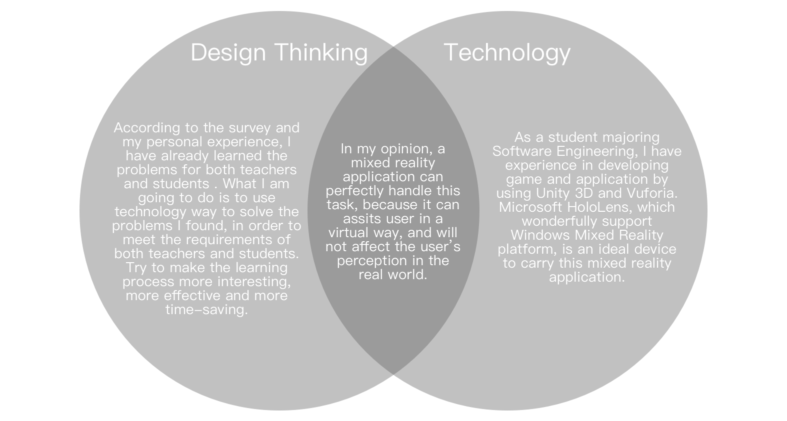
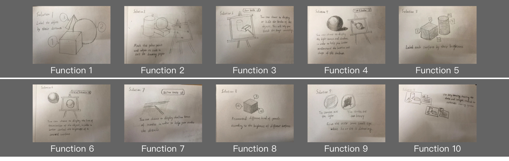
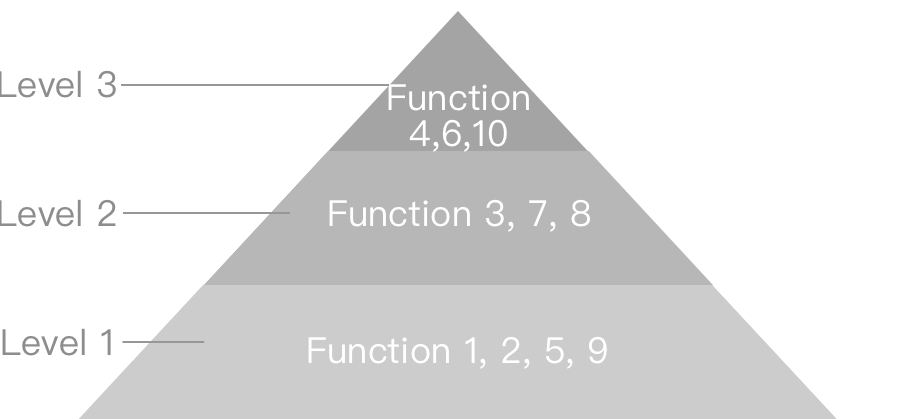
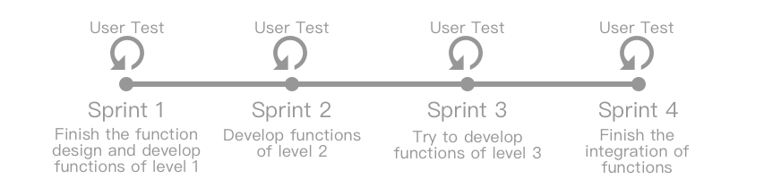

The story begin with...
For people who want to learn art and design, learning how to drawing is always the first step. Several months ago, I am also a novice who were learning drawing. However, for a student who major in computer science, it is not an easy task at first. Here are some episodes of my experience.
In the studio I learned drawing, I noticed that these problems are usual for almost all beginner. However, after several times practicing, we still feel very hard to solve these problems. This phenomenon really attracted me, because it is truly a pain point for most drawing novices. So I made a survey of both teachers and students, In order to figure out new problems and fully understand the pain point.
Survey
Teacher
Questions
1. Is there a orthodox process in drawing a sketch?
2. According to your observation, the novice usually have which kind of problem?
3. How did you do to help the students correct their fault?
4. Is there something could be improved in your teaching way, or something you should do better but you can't?
Answers
1. Generally 3 steps, observing, sketching and rendering, but none of them are independent.
2. The result is shown in the graph below.
3. Basically just point it out, and show them the right way.
4. I often don't have enough time to review every student's work clearly, so I may not able to discover all the problems.


Student
Questions
1. What is your drawing process?
2. What problems you have met in each step?
3. Is the teacher really help you a lot, or is there something could be improved?
4. Describe some details about your problems.
Answers
1. Also 3 steps(observing, sketching and rendering), but their answers are different in some details.
2. The result is shown in the graph below.
3. The teacher can always discover the problems I didn't notice. However, I often forgot her advice about how to correct my fault.
4. The result is shown in the graph below.


1. The observation is not meticulous enough; 2. There is a problem with the understanding of the shape; 3. The details are not accurate or their drawing skills are not enough to complete the details; 4. Their sequence is problematic; 5. Lack of necessary interpretation about sketching; 6. The posture of using pencil is incorrect; 7 Unfamiliar with drawing tools(different kind of pencils); 8. The scale and brightness of different objects are not unified, they are paradoxical (Lack of overall sense); 9. Lack of good sketching skills; 10. Lack of good rendering skills ; 11. Can not master the stroke strength well; 12. The character's look and the dynamic is difficult to grasp; 13. The texture of the specific material is hard to draw; 14. Used the eraser too much times and leave traces
A: Problems in observation; (1)
B: Problems with the understanding of the shape; (2)
C: Problems in drawing details; (3,12,13)
D: Lack of overall sense, pay too more attention to one object; (8)
E: Lack of skills, not proficient enough to handle all the parts; (7,9,10,11,14)
F: Elementary problems, such as lack of interpretation, incorrect sequence and posture. (4,5,6)
Design & Development
After confirming the developing tools and the device, I started to design the functions of my mixed reality application.
Functionality Design
The functionality design is based on Stephen Krashen's Input Hypothesis[1], which is a group of five hypotheses of second-language acquisition. However, I transformed its original meaning and tried using it in this project. The first hypothesis, which is known as i+1 hypothesis, assume the learner's current level, and +1 means the next stage in learning. What I do in this project is to divide the learning process into several "+1" stages, and let user acquire a part of knowledge or skills in each "+1" process, in order to help them make a progress every time.
Here is the list functions, generally divided by the 3 steps of drawing a sketch according to the survey:
Observing
1. You can label the objects by their distance(From the closet to the farthest).
Rendering
5. You can label each surface by their brightness(From the brightest to the darkest).
6. You can choose to display the line of termination of the objects, in order to better control the brightness of a curved surface.
7. You can choose to display shallow traces of strokes on order to help you render the details.
8. Recommend different kind of pencils according to the brightness of different surfaces.
Sketching
2. You can mark the polar point and adjust its scale to suit the drawing paper.
3. You can choose to display or hide the border of objects. This will help you sketch the shape correctly.
4. You can choose to display the light source and shadows, in order to help you better understand the location and shape of the shadows.
Others
9. Give the user some small tips when the user is drawing.
10. Use deep learning, training the data and images, establish an automatic scoring system.
View on Paper
Development Process
As a student majors in Software Engineering, I am familiar with the current popular Agile Software Development[2], an approach to software development under which requirements and solutions evolve through the collaborative effort of self-organizing and cross-functional teams and their user(s). Scrum[3] is one of the development framework in Agile. However, for this individual project, I combined Scrum framework with some features of iterative and incremental development[4]. Considering the difficulty of implementing each function is different: some functions won't take a long time, others are hard or have a large workload, I divided them into 3 level: level 1 is the easiest, and level 3 is the hardest. Starting from the easiest could bring self-achievement and shorten development time. The graphs below show the taxonomy of functions and the development process.
 